Cel Shader
Giving a toonish art style to your project
Cel shaders are very valuable in development and for those seeking to achieve a certain art style. This effect can be seen in major titles such as Breath of the Wild and the Borderlands franchise. So what is it exactly? Simply put, A cel shader casts the colors within a range to a certain value based on the design of the shader to give the scene a "paper-like" feel. This can be done in multiple ways but the result gives 3D objects and environments a look as if they were drawn. The benefits to this are numerous as cel shaders not only provide a nice art style but can speed up object and texture development by contrast. That is to say, artists won't need to be as specific in detailing because the cel shader can reduce detail yet preserve the artistic direction. Here I will provide two ways to implement this effect - One way will be based on a LUT band, and the other will be a manual setup. Both have their charms, but functionality remains very similar.
Creating a Cel Shader in UE4
Cel Shading: The LUT Band Setup
A LUT band serves as a clever way to reassign values to ranges based on where they fall on a lookup texture. Basically, the RGB values of colors in-game are compared to where they fall on the span of the Look Up Texture band, hence the acronym, then they are recast to the appropriate value the LUT band provides. A LUT is really a black-to-white texture that is 1 pixel in width, and however long you wish to have the span address. Having a longer LUT provides more accuracy to the amount of Cel Shading. Since RGB values cap at 256, the maximum dimensions of a LUT is technically 1 by 256 pixels. For this example, I will use a LUT with the dimensions of 1 by 128 pixels. I will skip some details in this implementation as I will cover them again in the alternate setup, but essentially, a Cel Shader using a LUT needs this setup in a Post Process material.
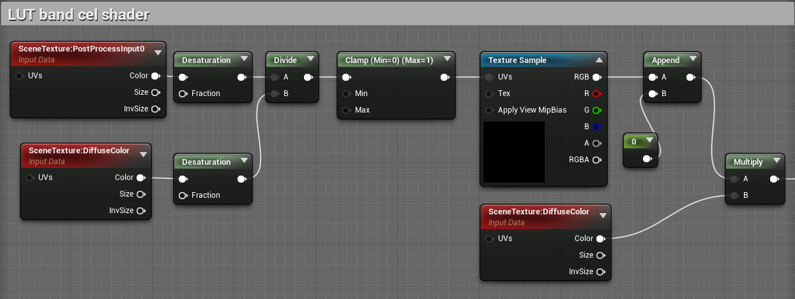Now just plug that into the emissive color input, and set the blendable location of the post process material to Before Tonemapping.
Cel Shading: Alternate Setup
This method is the implementation made by the developer of Prismatica, a game currently under development with a gold mine of technical art designs. The Youtube channel also contains more tutorials that I strongly suggest people watch if they wish to learn more.
Step 1
The process to creating one in UE4 is fairly straight forward. We will start by creating a material, naming it M_CelShader, and opening it up. In the editor, head to the material options in the Details panel. From there, change the Material Domain to Post Process. This will enable us to attach it to a post process object in the level. Also head down in the Details panel to the Post Process Material section and change the setting of Blendable Location to Before Tonemapping.
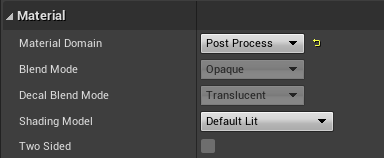 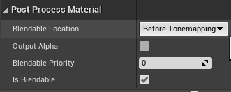Step 2
In the editor, we will create two Scene Texture nodes. In the first one, change the Scene Texture Id in the UMaterial Expression Scene Texture section in the Details panel to "PostProcessInput0". In the second node, change the Scene Texture Id to "DiffuseColor". Link the color output of each Scene Texture node to their own new Desaturation node. You can do this by dragging out the color output to anywhere outside the node and typing "Desaturation". From here, create a Divide node and link the output of the "PostProcessInput0" Desaturation node to the A input, and the other Desaturation node to input B of the Divide node. You can comment this section and label it Scene Texture. 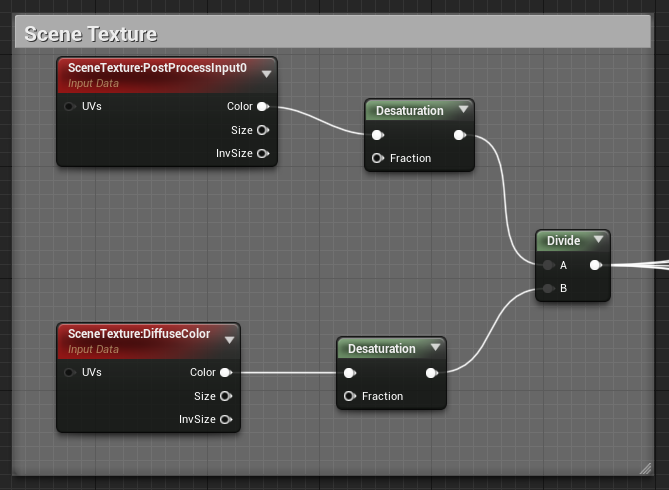
Step 3
Step 2 allows us to set up the ranges to be affected by the shader. In this step, we will create the ranges to affect the level. This will be done by connecting the output of the Scene Texture Divide node to different If statement nodes so make sure to space these out appropriately. The color ranges this tutorial will cover are Whites, Highlights, Neutrals, Shadows, and Blacks. So begin this process by dragging out the output of the Divide node to any space and create and If node. This will automatically connect it to the input A of the If node. Next, create a Scalar Parameter node and change its name to "White Threshold". In the default value, choose the value 8. Now link the output of the node to input B of the If node. Create a constant node by holding down 1 and left-clicking and link it to the "A > B" input of the If node. Choose the value 5. Next, duplicate the Scene Texture node with the "DiffuseColor" setting by selecting it and holding Ctrl + W. Drag it near the If node and drag the output of the color of the Scene Texture node out and create a Multiply node. Duplicate the White Threshold node and change the name to "White Tint" and change the default value to 4. Drag the output of that node to input B of the Multiply node. Now drag the output of the Multiply node to the "A < B" input of the If statement. You can now select the White Threshold, Constant, Scene Texture, White Tint, Multiply, and If node then press "C" and label this comment box "White". You're almost there now! Below this chunk of nodes, create a new If statement node. Drag the output of the original If node and tie it to the "A > B" input of the new node. Make sure you have ample room between these two things as the second If node will represent the range for Highlights. If the earlier instructions were properly followed, your white section should look like this.
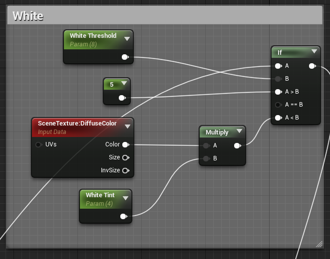Step 4
We will essentially repeat step 3 to create the ranges for Highlights, Neutrals, Shadows, and Blacks. The important note to make here is that we are basing the connections between the If nodes from the output of the previous to the "A > B" input of the current, and that the thresholds for each must be lower than the previous. It is because of this that it is handy (and visually appealing) to have these sections ordered like a ladder, with the White range at the top. Following this logic, you can duplicate the White range and edit the names for the respective range and change the threshold and tint values for the appropriate sections to: Highlight Threshold: 4.4, Highlight Tint: 2, Neutral Threshold: 1.3, Neutral Tint: 1.25, Shadow Threshold: 0.7, Shadow Tint: 0.75, Black Threshold: 0.01, Black Tint: 0. Feel free to play around with these values to achieve the effect you desire once this is set up completely, but remember that the threshold values must follow a decreasing order. The four sections should look like below if the instructions were properly followed.
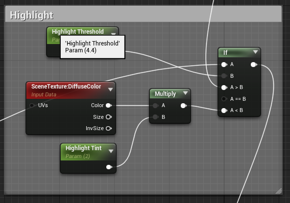 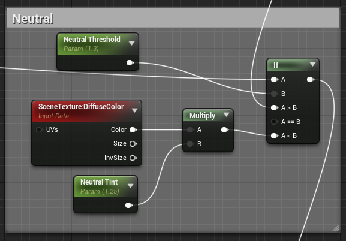 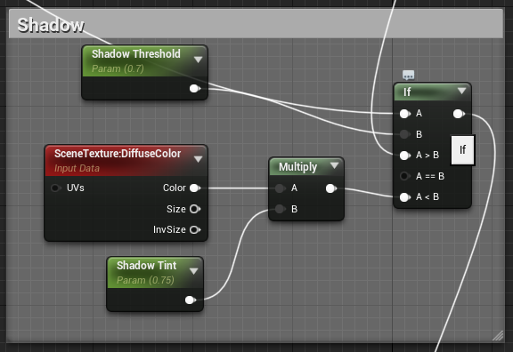 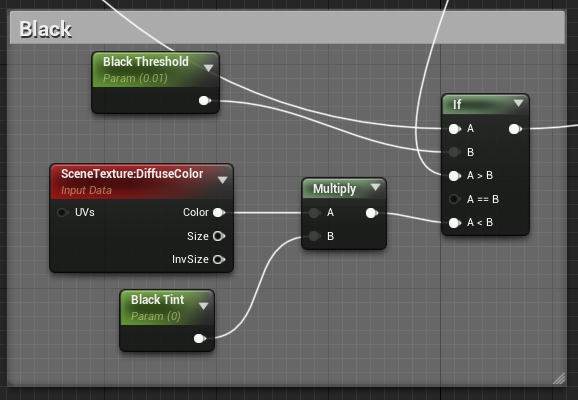Step 5
Here we can connect the output of the final If node to the master node's Emissive Color input. Press Apply at the top left of the editor and return to the level. From the level overview, search in the Place Actors section for a Post Process Volume and add it to the level, then select it. In the Details panel, scroll down to the Post Process Volume Settings. Change the Blend Weight value to 1.0, and make sure that Enabled is selected and Infinite Extent(Unbound) is also selected. This will make it such that the Cel Shader is no longer bound to the size of the Post Process Volume object. Next, scroll up in the Details panel to the Rendering Features section. Expand the Post Process Materials section, then expand the array section. Select "Asset reference", or the last option in the dropdown menu, and select the M_CelShader material we created at the start of the tutorial. This should already affect the scene and make it seem as if it were drawn. But we're not done yet, unfortunately.
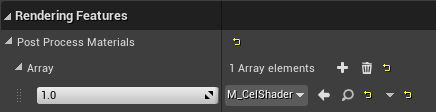 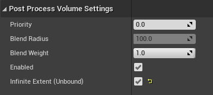Step 6
The way the material is set up, the color of lights is not preserved through the post process effect. A lot of tutorials seem to miss out on this dire detail. Using the cel shader as is will make lights seem like pronounced white circles and that's not how light works, so, yeah. To fix this, head back into the material editor. Duplicate the Scene Texture with "PostProcessInput0" from the Scene Texture section and drag it out to the right of the ranges. Drag the color output of the Scene Texture node and create a Normalize node. Now create a Multiply node by holding down M and left-clicking and change the value of the constant B to 1.5. Drag the output of the Normalize node to the input A of the Multiply node. Now create a new Multiply node and connect the output of the original Multiply node to input B. Next, head back to the Black ranges If node a drag the output to near the new Scene Texture "PostProcessInput0" node and create a Desaturation node. Link the output of this Desaturation node to the input A of the second Multiply node. You can now select the Scene Texture, Normalize, Desaturation, and both Multiply nodes and adding them to a comment box labeled "Light Color Enabling". Link the output of the second Multiply node to the Emissive Color input of the master node. This should now enable colored lighting! The section should look like this.
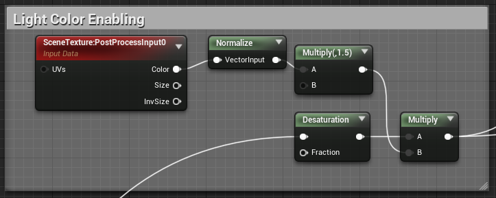Step 7
This next step is not absolutely necesssary, but it is nice to have included since a cel shader pronounces colors and shade within a range to a single constant. This means that in some cases, lighting details may be lost or unnoticeable without proper ambient occlusion added to the material. So let's add that. Near your "Light Color Enabling" section, create a new Scene Texture node. In the Scene Texture Id setting, select "Ambient Occlusion". Drag the color output to the right and create a Component Mask node. Make sure to have the R, G, and B fields selected. Create a Multiply node to the right of it and drag the output of the Mask node to the B input of the Multiply node. Finally, return to the Light Color Enabling section and drag the output of the Multiply node to the A input of the Multiply node we just created. Comment the three nodes to their own comment box and label it "Ambient Occlusion". And there! Select Apply or Save in the top left corner to complete your cel shader.
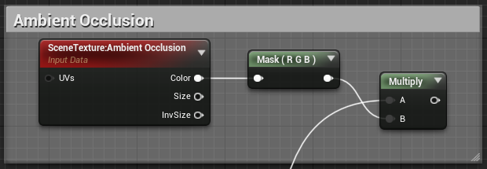Additional Step
While a Cel Shader can be a key aspect of your artistic direction, there are ways it can hinder other effects in your world. Skyboxes and skies in general tend to scale in a negative fashion with Cel Shading. To avoid this, you can limit the range of effect of your Cel Shader by curbing its effect based on distance. You can slap this functionality at the end before plugging it into the emissive, and having your effect plug into the A < B input of the If statement.
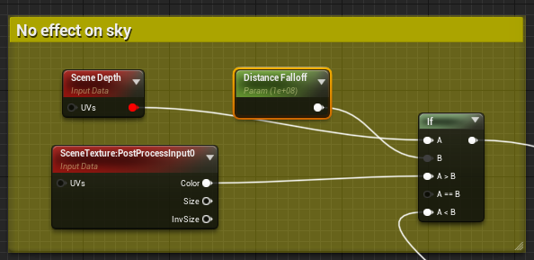Performance
Enjoy! Your Cel shader is now complete and you may now experiment with the values to reach the desired effect. On another note, this effect should be implemented early on in production. This can have effects on your visuals and it's better to see its potential early on. This effect and its different forms are pretty performant on their own and can be built upon. Shader complexity seems to grow based on the complexity of other materials that go through it during runtime, namely landscape materials. Based on testing, I can say it's rather marginal and should not discourage you from trying things.
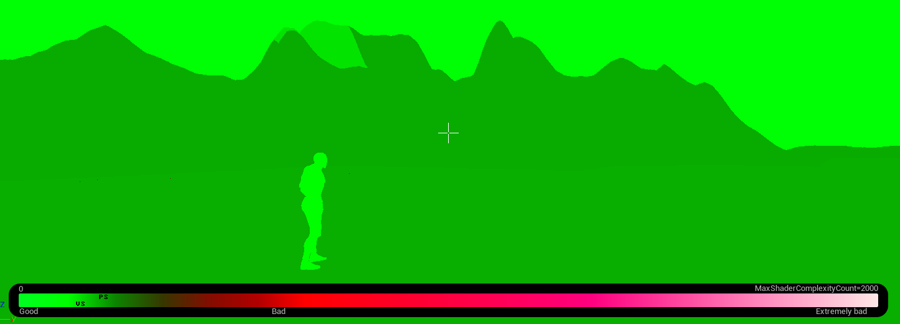